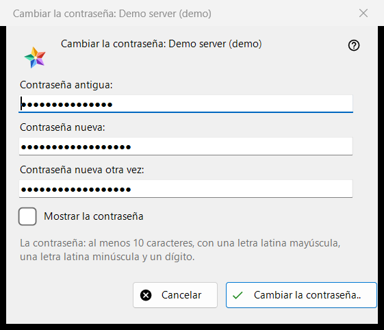
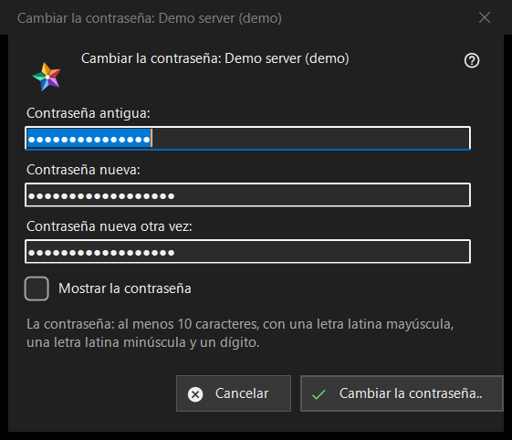

Cambiar la contraseña
Para qué sirve
Cambia la contraseña de su cuenta en un servidor de intercambio. Se abre desde el botón «Cambiar la contraseña..» de una entrada de servidor en la sección «Mis dispositivos» de la lista de recursos; el botón se muestra mientras ese servidor esté en línea. El título nombra la cuenta.


En este orden
- Escriba la contraseña antigua.
- Escriba la contraseña nueva dos veces.
- Pulse «Cambiar la contraseña..»; «Cancelar» cierra la ventana y no envía nada.
Los elementos
Los tres cuadros
«Contraseña antigua:», «Contraseña nueva:» y «Contraseña nueva otra vez:»; «Mostrar la contraseña» las revela. Los cuadros se borran al cerrar la ventana. La ventana solo recoge las contraseñas: el programa las envía al servidor por la conexión de esa entrada.
La regla de la contraseña
La nota dice: al menos 10 caracteres, con una letra latina mayúscula, una minúscula y un dígito. La ventana lo comprueba antes de enviar nada y nombra la parte que falla, por ejemplo «La contraseña es más corta de 10 caracteres.» o «La contraseña no tiene ningún dígito.»; también dice «Indica la contraseña antigua.» y «Las dos contraseñas no coinciden.». El servidor aplica la misma regla y tiene la última palabra.
Después del cambio
Si todo va bien, el estado dice «La contraseña ha cambiado. Este equipo sigue funcionando, y los demás dispositivos de la cuenta deben iniciar sesión de nuevo.» Las negativas: la contraseña antigua no encajó; demasiados intentos (espere un minuto y repita); el servidor rechazó el cambio; no hay conexión con el servidor (conéctese y repita).